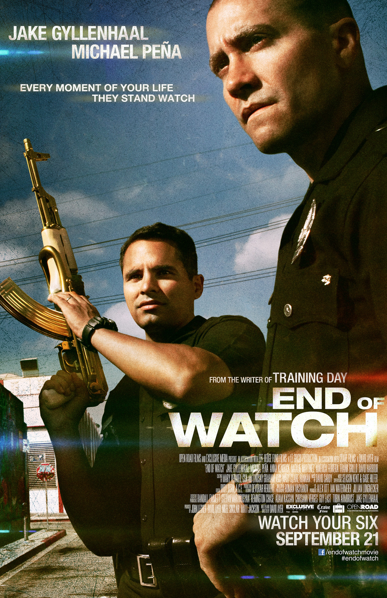

About End of Watch
End of Watch is about two LAPD officers and their day to day life. These officers Brian and Mike portrayed by Jake Gyllenhaal and Michael Pena have been on patrol together for years and have become best friends both on and off the job. Coming off a recent officer involved shooting Brian and Mike are referred to as cowboys by the rest of the department. This causes the department to put them in a much slower neighborhood within its jurisdiction. This causes problems as they see themselves as high performers and continue to look for high profile cases to continue their career.
